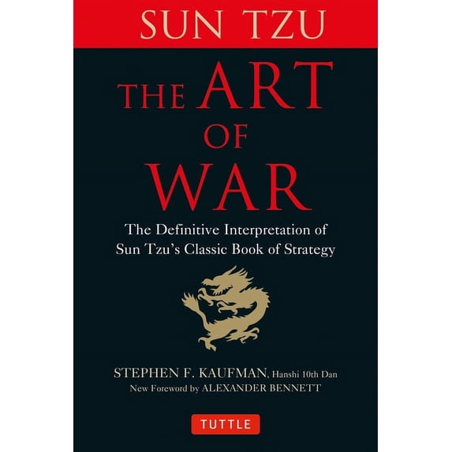

Library › Power & Strategy
The Art of War — Summary & Key Lessons

The 2,500-year-old strategy classic — supreme excellence is winning without fighting.
📖 OPEN THE FULL INTERACTIVE BREAKDOWN →🌐 Read it in Hindi, Hinglish, Gujarati, Tamil & 22 more languages — free, with audio.
💡 The Big Idea
Written for warring Chinese states ~500 BC and studied ever since by generals, CEOs, and negotiators, Sun Tzu's thirteen chapters form the foundational text of strategic thought. Its revolutionary core: war (and by extension all conflict — business, negotiation, competition) is won by CALCULATION, DECEPTION, and POSITIONING before contact, not by courage during it. The pillars: supreme excellence is breaking resistance WITHOUT fighting (the best victory leaves nothing destroyed); all warfare is based on deception (appear weak when strong, strong when weak); know the enemy and know yourself and a hundred battles bring no peril; speed and timing beat mass; fight only battles already won (position until victory is certain, then move); and terrain, energy, and morale are calculable factors, not mysteries. Every modern strategy book is a footnote to these thirteen chapters.
🧠 The 4 Key Lessons
Lesson 1: Win Without Fighting
Chapters 2–3: Waging War / Attack by Stratagem
Sun Tzu's hierarchy of excellence inverts the warrior mythos: 'to fight and conquer in all your battles is NOT supreme excellence; supreme excellence consists in breaking the enemy's resistance without fighting.' The ranked methods: best is to attack the enemy's STRATEGY (defeat the plan before it deploys); next, attack ALLIANCES (isolate); next, attack the ARMY; worst of all, besiege walled cities (the costliest, longest, most desperate option — the corporate equivalent: price wars, litigation, head-on feature battles). Underneath is the economics chapter: prolonged conflict bankrupts even winners ('there is no instance of a country having benefited from prolonged warfare') — every month of fighting burns the treasure that victory was supposed to deliver, which is why the calculating strategist counts the FULL cost of conflict before choosing it, and prefers the victory that leaves the prize intact: take the state whole, win the customer without destroying the market's margins, absorb the rival's position without the war.
📖 Example: History's applications run from the ancient to the quarterly: Sun Tzu's contemporary case — the general who took cities by turning their allies and starving their strategies, celebrated above the general who won bloodier triumphs; and the modern mirror Sun… Read the full example →
⚡ Do this: Map your current conflict (competitor, negotiation, rivalry) against the hierarchy: are you attacking their strategy, their alliances, their forces — or besieging a wall? If it's a siege, redesign one level up: what would make their PLAN obsolete rather than their position contested?
Lesson 2: All Warfare Is Based on Deception
Chapter 1: Laying Plans
The most quoted doctrine: 'All warfare is based on deception. Hence, when able to attack, we must seem unable; when using our forces, we must seem inactive; when we are near, we must make the enemy believe we are far away.' The strategic logic beneath the aphorisms: conflict is decided by the gap between expectation and reality — so the calculating side MANAGES the opponent's expectations (feed overconfidence with apparent weakness, induce paralysis with apparent strength, misdirect preparation with false signals), then strikes where preparation isn't ('attack him where he is unprepared, appear where you are not expected'). The domestic application is defensive as much as offensive: assume competitors curate what you see of them; announced strategies are often theater; and your own signals — hiring, launches, enthusiasm — are being read by someone. The disciplined player controls their information exhaust as carefully as their plans.
📖 Example: The tradition's own legend: Sun Tzu allegedly proving his methods by drilling the king's concubines — but the doctrine's battlefield résumé is endless: from Trojan horses to D-Day's phantom army (Patton commanding inflatable tanks that pinned German… Read the full example →
⚡ Do this: Audit your information exhaust: list what your competitors/counterparties can currently observe about your plans (posts, listings, announcements) — and decide deliberately what the exhaust SHOULD say. In your next negotiation, plan not just your position but the expectation you want them to hold about it.
Lesson 3: Know Yourself, Know the Enemy
Chapter 3 & 13: Attack by Stratagem / The Use of Spies
The epistemology of victory: 'If you know the enemy and know yourself, you need not fear the result of a hundred battles. If you know yourself but not the enemy, for every victory gained you will also suffer a defeat. If you know neither, you will succumb in every battle.' Both knowledges are disciplines, not assumptions: SELF-knowledge means honest audits of your real capacities, morale, resources, and tendencies (most defeats are self-ignorance — the overestimated capability, the unbudgeted weakness); ENEMY-knowledge cannot come from hope or stereotype — hence the closing chapter's scandal in its era: an entire treatise on SPIES ('foreknowledge cannot be gotten from ghosts and spirits... but must be obtained from men who know the enemy situation') — elevating intelligence-gathering to war's supreme investment, because one funded informant is cheaper than one lost campaign. The modern translation: systematic competitive intelligence, genuine customer research, and honest internal metrics — versus the standard practice of confident guessing in all three.
📖 Example: Sun Tzu's arithmetic on spies scandalized contemporaries: he argues that begrudging the expense of intelligence while spending fortunes on armies is 'the height of inhumanity' — penny-wise about the one input that decides everything. History's ledger agrees:… Read the full example →
⚡ Do this: Institutionalize both knowledges: (1) self — run the honest audit: three real strengths, three real weaknesses, current 'morale' and resource levels, written without spin; (2) enemy — assign yourself one hour weekly of systematic intelligence on your top competitor/counterparty (their hiring, pricing, announcements, reviews). Guessing is the expensive option.
Lesson 4: Win First, Then Fight: Position, Energy & Timing
Chapters 4–6: Tactical Dispositions / Energy / Weak Points and Strong
The victory-sequencing doctrine: 'Victorious warriors win first and then go to war; defeated warriors go to war first and then seek to win.' The skilled strategist first makes themselves UNBEATABLE (secure against defeat — that part lies in your own hands), then waits for the enemy's vulnerability (which lies in theirs): 'invincibility lies in the defence; the possibility of victory in the attack.' The supporting mechanics: ENERGY — use the NORMAL force to engage and the EXTRAORDINARY force to win (cheng and ch'i: the expected front fixes attention; the surprise reserve decides); combined energy is timing — 'the quality of decision is like the well-timed swoop of a falcon'; and WEAK POINTS — be formless yourself while forcing the enemy to take form ('the spot where we intend to fight must not be made known'), attack what they must rescue, and be 'first at the battlefield' — arriving fresh where the fight will be, while they arrive exhausted. Strategy, in this reading, is the art of accumulating certainties before contact: position until the fight is a formality.
📖 Example: The falcon-timing exhibit in every era: military — Napoleon's reserves committed at the exact fracturing moment (the extraordinary force deciding what the ordinary force arranged); business — the companies that secured 'unbeatable' positions first (cash… Read the full example →
⚡ Do this: Sequence your next campaign Sun Tzu's way: first list what would make you UNBEATABLE in it (reserves, position, preparation) and secure those; then identify the opponent's must-defend point and the timing trigger you'll wait for. Hold the extraordinary force — your best move — in reserve until the falcon moment, and don't launch while victory is still a hope rather than an arithmetic.
✅ 5-Step Action Plan
- Escalate one level above the siege: attack strategy, not walls.
- Manage your information exhaust; plan their expectations, not just your moves.
- Run the two audits: honest self-knowledge, scheduled enemy-knowledge.
- Become unbeatable first; bank certainties before any contact.
- Hold the extraordinary force for the falcon moment.
💬 Best Quotes from The Art of War
- “The supreme art of war is to subdue the enemy without fighting.”
- “If you know the enemy and know yourself, you need not fear the result of a hundred battles.”
- “Victorious warriors win first and then go to war, while defeated warriors go to war first and then seek to win.”
Interactive version: mark lessons as read, listen in your language, share quote cards.